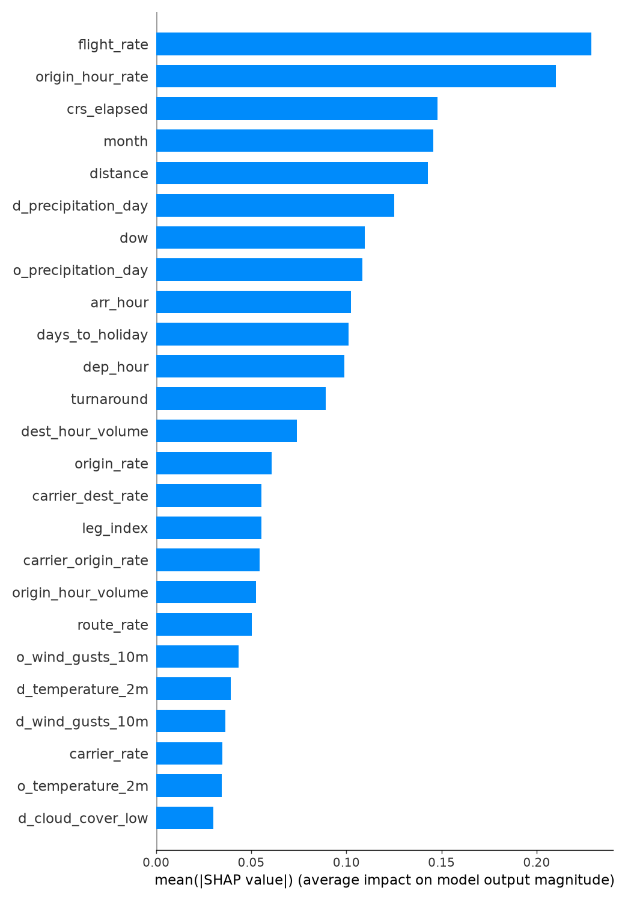

Will my flight be delayed?
Enter your flight number and travel date to see the chance it arrives 15 or more minutes late, based on a year of flight records and the weather forecast at both airports.
Chance of arriving 15+ minutes late
What's driving this estimate
How much each factor pushed this flight's odds up or down compared with a typical flight.
Weather at departure and arrival
Hourly forecast from Open-Meteo for the scheduled times, available up to 16 days ahead.
How it works
How we did this, and how accurate it is
- We used every domestic flight reported to the U.S. Bureau of Transportation Statistics over the past year. A flight counts as delayed if it arrived 15+ minutes late, was cancelled, or was diverted.
- The model is a gradient-boosted tree ensemble (LightGBM). It looks at how often the airline, both airports, the route and this exact flight number have run late, plus time of day, day of week, month, how busy each airport is at that hour, and how close the date is to a major holiday.
- The plane itself matters. Late-arriving aircraft are the single biggest cause of delays in federal data, so the model looks at how late in the plane's day the flight usually runs, where the plane usually flies in from, and how much time is scheduled to turn it around. It also uses the aircraft type, age and size from the FAA aircraft registry, and whether a regional airline operates the flight for a major brand.
- It also looks at hourly weather at both ends: temperature, rain, snow, wind, gusts and cloud cover. Historical weather came from Open-Meteo's archive; your flight uses the live forecast.
- We used SHAP values to rank every feature by how much it moves predictions, and removed features that added nothing.
Tested on the most recent two months of flights, which the model never saw during training:
Live scorecard. Each month BTS releases, before retraining, the model the site was serving is scored on that month's flights. It had never seen them. Weather inputs use what actually happened rather than the forecast you'd see, so treat these as a best case for weather.

Features ranked by average impact on predictions (mean |SHAP value|).